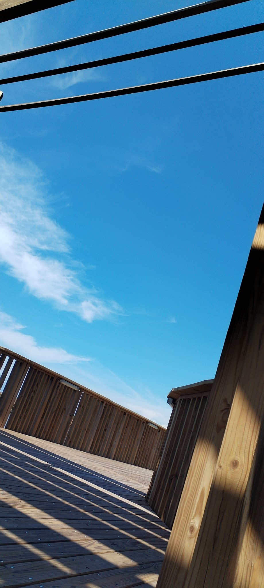

El inicio
Durante el inicio de nuestro recorrido nos encontramos con una imagen interesante y en apariencia, similar a cualquier libro de naturales de primaria.
Un sendero completamente hecho en madera, con múltiples bifurcaciones que se adentran completamente en el corazón del manglar.

Los senderos
Con forme caminábamos, veíamos diferentes tipos de plantas y aves propias de un ecosistema tan húmedo como lo es un manglar.

Una pequeña mariposa que encontramos durante nuestro recorrido inicial, ella intento atraerla a su mano sin mucha suerte.
El trayecto
Originalmente, el guiá en la entrada nos informo que el recorrido tendría una duración aproximada de dos horas, sin embargo, al paso en el que íbamos estaríamos ahí por horas.
Debo decir que fueron mas de 6 horas, pero admito que fueron las mejores que he tenido en mucho tiempo.
Parte de la vegetacion encontrada dentro del manglar
Los artrópodos
Estos son algunas de los diferentes artrópodos que encontramos mientras realizabamos el recorrido.

Encontramos un nido gigante de termitas, se puede ver como consumen la corteza del árbol para crecer.

Una "pequeña" araña disfrutando del sol en su telaraña.
La cienega
Antes de 1935, la ciénaga de Mallorquín era un sistema de lagunas costeras que comunicaban con el mar, ubicadas sobre la margen izquierda del tajamar occidental de Bocas de Ceniza, conformado por cuatro ciénagas: de Mallorquín, de San Nicolás, Grande y de la Playa.

Un Pequeño Descanso
Para este momento parecía que eramos los únicos en esta ciénega, todo era realmente tranquilo y relajante, un lugar perfecto para tomar una pequeña siesta.
Conclusión
El recorrido por la Ciénaga de Mallorquín es una actividad ideal si disfrutas de largas caminatas rodeadas de naturaleza, acompañadas por el envolvente sonido de sus habitantes. Aunque aún no se han terminado todos los senderos, encontrarás suficientes rutas disponibles, llenas de maravillas para apreciar. La naturaleza debe ser una parte sinérgica de nuestro desarrollo como sociedad, y no podemos dejarla de lado. Por eso es tan importante preservar estos espacios para que todos podamos disfrutarlos al máximo.
Por supuesto